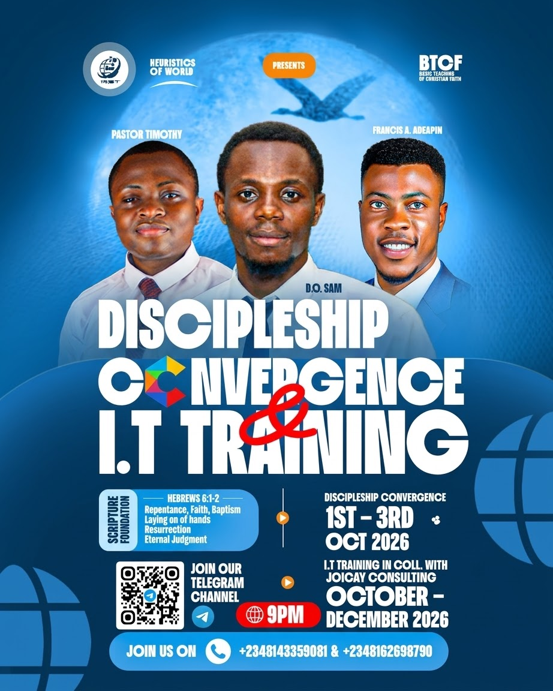
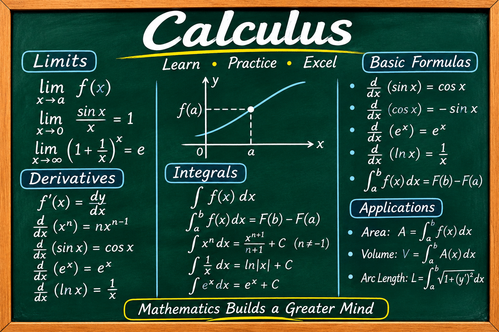

Engineering & Construction
Civil engineering knowledge and practical site supervision experience, with an interest in construction coordination and technical problem-solving.
WELCOME TO MY PERSONAL PORTFOLIO
Combining technical competence, digital creativity, purposeful leadership and a passion for developing people to create meaningful impact.


01 / ABOUT ME
I am Omoyeni Durodeoluwa Samuel, a versatile professional with interests spanning civil engineering, frontend development, ministry and mathematics coaching.
I enjoy solving practical problems, building digital experiences, sharing knowledge and helping people develop their potential.
My engineering background strengthens my analytical thinking, while my interest in technology drives me to explore innovative digital solutions.
Beyond professional practice, I am passionate about discipleship, leadership, education and helping young people discover and develop their God-given abilities.
Let's connect ↗02 / WHAT I DO
Four areas through which I apply my knowledge, skills and experience.
Civil engineering knowledge and practical site supervision experience, with an interest in construction coordination and technical problem-solving.
Developing responsive web experiences and exploring how technology can solve practical problems through digital products.
Discipleship, biblical teaching, youth development, leadership and community engagement through ministry initiatives.
Helping WAEC and JAMB candidates develop mathematical understanding, confidence and problem-solving abilities.
03 / SELECTED WORK
Practical projects and digital solutions developed through continuous learning.
A web-based learning platform designed to help users organise goals, manage learning tasks and monitor progress.
View Live Project ↗
A community-focused digital project exploring how technology can support communication, connection and engagement.
Contact Us ↗04 / MINISTRY & LEADERSHIP
A commitment to discipleship, purposeful living and the development of people.

HEURISTICWORLD is a Christian organisation focused on helping people, including young people, discover, develop and live their God-given vision through discipleship, education and practical training.
My ministry involvement centres on biblical teaching, discipleship, leadership development and helping people align their lives with purpose.

Basic Teaching of Christian Faith, providing foundational biblical instruction and discipleship.

A discipleship convergence focused on biblical foundations, spiritual growth and practical development.

An outreach initiative engaging students and young people through faith, guidance and purposeful living.
Interested in ministry partnerships, youth development or collaborative initiatives?
Connect With Me↗05 / EDUCATION & COACHING

Helping learners build mathematical understanding, confidence and the ability to solve problems.
I provide mathematics coaching for WAEC and JAMB candidates through private lessons, both online and on-site.
My approach focuses on simplifying mathematical concepts and helping learners develop confidence in their abilities.
Enquire About Coaching ↗06 / MY PROFESSIONAL JOURNEY
PROFESSIONAL EXPERIENCE
Involved in construction site supervision, monitoring site activities and supporting project execution.
Participated in work associated with a construction project valued at approximately $1 million.
2024
Civil Engineering.
CONTINUOUS DEVELOPMENT
Developing practical skills in HTML, CSS and JavaScript through personal projects and continuous learning.
MINISTRY & LEADERSHIP
Leading initiatives in discipleship, Christian education, youth development and purposeful living.
Building People. Developing Ideas. Creating Impact.
MY PERSONAL PHILOSOPHY
07 / GET IN TOUCH
Open to professional opportunities, engineering projects, web development collaborations, ministry partnerships and educational engagements.